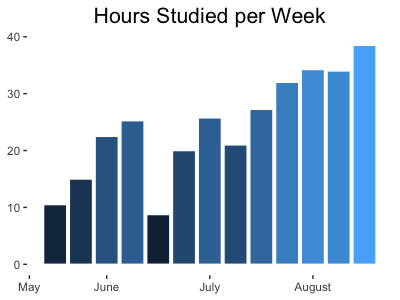

While the theory qualifying exam existed as a vague, anxious priority during the semesters leading up to it, I didn't begin studying in earnest until summer break. That left 13 weeks to prepare.
I strategized along two broad aims: maximizing my time spent studying and mentally preparing for the day of the exam. The weeks spent working were only as fruitful as my final performance, and I wanted to show up in the best possible mindset given the circumstances.
To this end, my mantra throughout the summer was
Work until problems become boring
My biggest fear was sitting down for the exam and blanking, completely unable to start.
In order to optimize reviewing, I gave structure to my studies by answering and continually revisiting the following three questions:
Reviewing created a lot of artifacts, mostly solutions to previous exams and homeworks, and I needed a sensible method for organization. At the time, I exclusively used paper notes. If you do the same, I recommend dividing content by source (class, old exam, etc.) and ordering chronologically. There's nothing more frustrating than knowing you wrote something down only to forget where.
Experiencing that frustration several times motivated the creation of a condensed list of all the facts/theorems/proofs I kept forgetting. Some of those items made it to flashcards which I drilled whenever my motivation to tackle something new waned.
Those flashcards were born out of a necessity to maintain momentum while respecting where I was at mentally. These exams are uniquely unpleasant to prepare for, and I hope you are as forgiving as possible with yourself. Some days, I wasn't up to the task of tackling new problems. Going thru flashcards and problems I knew on autopilot kept me moving forward.
In addition to treating each day's motivation with grace, I found that working with my peers kept me going. In any given year there are, what, a dozen people who care about these exams: you and your cohort. To us they are wildly important, and to everyone else they exist as this strange, amorphous task PhD. students are put through. I highly recommend forming study groups, even just to check in with each other once a week in solidarity.
It can be tempting to obsess/dwell on a minor topic you struggle with, do so with caution. I made a list of all the topics I wanted to cover, divided them into 13 weeks, and stuck to that. I tracked my hours to ensure I put in the requisite time and to allow myself to feel good about what I had done. It is easy to feel overwhelmed. To give you a sense of what previous students invested, my hours were:
Like good statisticians, we tried to guess what would be on the exam based on previous quals and course materials. We were almost exactly wrong. While it was tempting to think this year there has to be a linear model question like ..., it ultimately only added stress.
Good luck! Feel free to contact me with any questions.